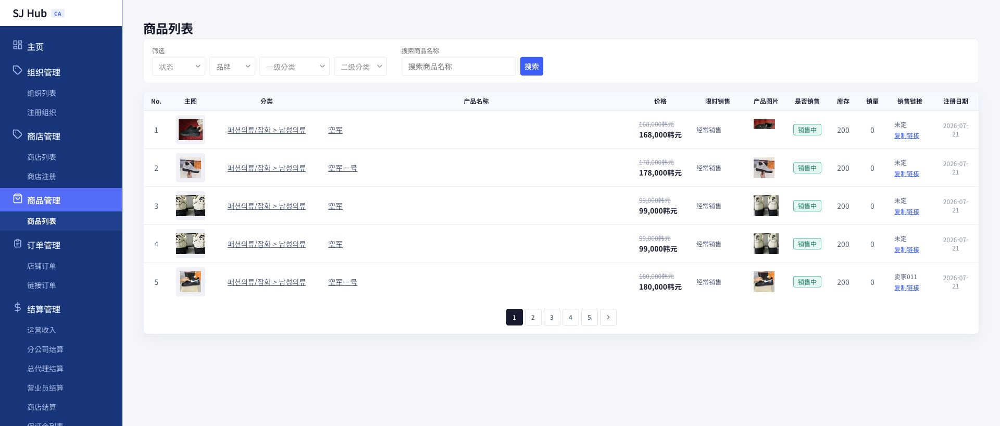

CHAPTER 4
상품관리
등록 상품 조회 · 분류 변경 · 판매상태 관리
1
상품 목록 화면 (商品列表)
CA 산하 모든 상점의 등록 상품을 조회합니다. CA는 상품을 직접 등록하지 않고 조회·분류변경·판매상태 관리만 합니다.

1
2
3
4
사용 방법
1
필터로 상품 찾기
상태(판매중/판매종료), 브랜드(상점), 상위·하위 카테고리, 상품명 검색어로 좁혀볼 수 있습니다.
2
분류 바로 바꾸기
"분류" 칸을 클릭하면 그 상품의 카테고리를 바로 변경할 수 있습니다.
3
판매상태 토글하기
"판매여부" 버튼을 눌러 판매중↔판매종료 상태를 바꿉니다.
4
판매링크 복사하기
셀러명과 함께 있는 "링크 복사" 버튼으로 셀러가 SNS 등에 공유할 상품 링크를 클립보드에 복사합니다. 이 링크로 들어온 주문은
주문관리 > 링크주문
에서 조회됩니다.
2
이 화면에서 할 수 없는 것
상품 신규 등록은 CA 어드민의 역할이 아닙니다.
💡 이 화면에는 "상품 등록" 버튼이 없습니다. 새 상품은 각 상점(BA 어드민) 쪽에서 직접 등록하며, CA는 등록된 상품을 조회·관리하는 역할만 합니다.
이전 챕터
3. 상점관리
CHAPTER 4 / 8
다음 챕터
5. 주문관리
→